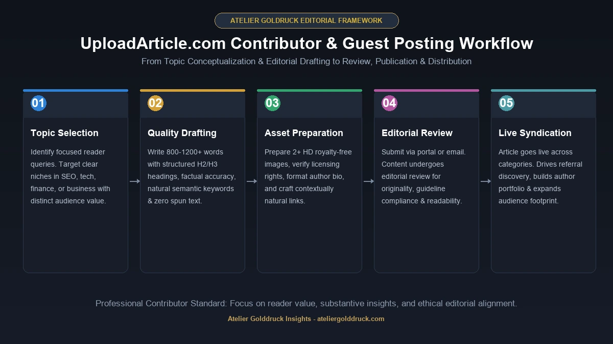
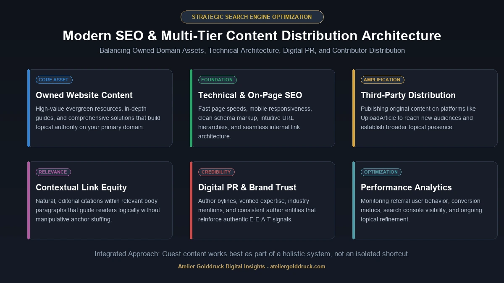

If you are searching for UploadArticle.com, you are probably looking for more than just a website address. You may want to know what UploadArticle is, whether you can publish an article there, how its guest-posting process works, what topics it accepts, and whether it can actually be useful for SEO and online visibility.
UploadArticle.com is an online content-publishing platform that currently features articles across areas such as SEO, business, technology, education, finance, health, travel, home and garden, and general topics. The site also promotes guest posting and digital marketing content.
For contributors, the appeal is fairly straightforward: publish useful content, reach readers outside your own website, build an author presence, and potentially use relevant links as part of a broader content-marketing strategy.
But there is an important distinction between publishing an article and getting SEO results from that article. A submission by itself does not guarantee traffic, rankings, backlinks, or authority.
This guide takes a closer look at what UploadArticle.com is, how it works, what contributors should know before submitting content, and where it fits into a modern SEO and content strategy.
What Is UploadArticle.com?
UploadArticle.com is a multi-topic article publishing website where contributors can publish content across several categories.
The platform currently lists sections such as:
- General
- Health
- Business
- Travel
- Tech
- Technology
- Education
- SEO
- Home and Garden
- Finance
Its homepage describes UploadArticle as a platform for guest posting, content publishing, and digital marketing insights.
That broad category structure means the website is not limited to one industry. A contributor might publish an SEO article one day, while another writer may contribute an education, business, technology, travel, or lifestyle piece.
This makes UploadArticle.com relevant to several types of users:
- Bloggers
- Freelance writers
- Businesses
- SEO professionals
- Digital marketers
- Entrepreneurs
- Subject-matter experts
- Agencies
- People building an online portfolio
The important part is choosing a topic that genuinely fits the audience instead of publishing something simply because a backlink is available.
How Does UploadArticle.com Work?
At a basic level, the process is similar to other contributor-based publishing websites.
A typical workflow looks like this:
Choose a topic → Write an original article → Review the content → Prepare images → Submit it → Wait for editorial review → Make revisions if requested → Publication

UploadArticle's published contributor guidance provides specific requirements for submissions.
One current submission page asks for original work, appropriate publishing rights, at least 1,200 words, two related HD-quality images, and two to three subheadings. It also says submitted content should be descriptive, grammatically correct, and original.
Another UploadArticle contributor page describes a slightly different set of guidelines, including 800+ words, relevant keywords used naturally, quality writing, royalty-free images with credits, and an author bio. It also says contributors can submit articles by email for editorial review.
Because submission requirements can change between pages or over time, contributors should check the current official Write for Us instructions immediately before submitting.
UploadArticle.com Write for Us
One of the biggest reasons people search for UploadArticle.com is the Write for Us opportunity.
The platform actively promotes guest contributions and says it welcomes original, informative content across multiple categories. Its published contributor material specifically mentions subjects such as digital marketing and SEO, business and entrepreneurship, lifestyle and travel, health and wellness, technology and gadgets, education and career advice, and real estate.
For a writer or business, this can provide an additional publishing outlet.
However, the best approach is not:
“How can I get my backlink published?”
A better question is:
“What useful information can I contribute that readers would actually want to read?”
That shift matters.
A genuinely useful article has a better chance of attracting attention, being read, being shared, and creating a positive association with the author or brand.
What to Prepare Before Submitting
Before approaching UploadArticle, have the following ready:
- A specific article idea
- An original draft
- A clear title
- Proper headings
- Relevant images
- An author bio
- Supporting sources where needed
- Relevant links
- Correct grammar and formatting
Do not wait until after writing the entire article to discover that the topic does not fit the site's current requirements.
What Topics Can You Publish on UploadArticle.com?
UploadArticle.com has a broad editorial footprint.
The site's current navigation includes categories such as SEO, business, technology, education, finance, health, travel, and home and garden.
This creates opportunities for different types of contributors.
SEO and Digital Marketing
Possible topics include:
- Search engine optimization
- Content marketing
- Keyword research
- Link building
- Technical SEO
- Local SEO
- Digital marketing
- Website optimization
Business and Entrepreneurship
Business contributors might cover:
- Startup strategy
- Entrepreneurship
- Business operations
- Leadership
- Customer acquisition
- Productivity
- Business technology
Technology
Technology writers can explore:
- Software
- Artificial intelligence
- Gadgets
- Automation
- Cybersecurity
- Web development
- Emerging technologies
Education
Education content can include:
- Learning methods
- Career development
- Online education
- Study strategies
- Professional skills
Lifestyle and Other Topics
Depending on the current editorial requirements, contributors may also find opportunities in travel, health, finance, home improvement, and other general-interest areas.
The key is relevance. A broad publishing platform does not mean every topic is automatically appropriate for every article.
Why Do People Use UploadArticle.com?
There are several reasons someone might consider publishing on UploadArticle.com.
1. Content Distribution
Publishing somewhere other than your own website gives an article another potential path to readers.
For businesses and writers, this can complement owned content published on their own websites.
2. Author Visibility
An article can demonstrate what a writer knows.
For example, a freelance SEO specialist could use an informative SEO article as evidence of their knowledge when building a professional portfolio.
3. Brand Exposure
Businesses can use educational guest content to introduce their expertise to an audience outside their own website.
The content should remain useful, though. A page that reads like an advertisement from the first sentence is less valuable to readers.
4. Relationship Building
Guest publishing can help writers connect with publishers, editors, marketers, businesses, and other contributors.
Content marketing is often more effective when viewed as a long-term relationship-building activity rather than a one-time backlink transaction.
5. Potential SEO Value
Relevant links from published content may be useful as part of an overall SEO strategy.
But this needs to be put into perspective.
Publishing on UploadArticle.com does not guarantee higher Google rankings.
Search visibility depends on many factors, including relevance, content quality, website authority, technical SEO, competition, links, user experience, and the usefulness of the page.
Is UploadArticle.com Good for SEO?
It can be useful for content marketing and SEO, but it should not be treated as a shortcut to rankings.
This is where many article-submission strategies go wrong.
Someone publishes dozens of thin guest posts, places keyword-heavy anchor text in every article, and expects the target website to jump to the top of Google.
That is not a sustainable strategy.
A better approach is to use contributor publishing as one part of a larger system.
A Balanced SEO Strategy
Think about SEO in several layers:
| SEO Area | Purpose |
|---|---|
| Website content | Builds topical relevance |
| On-page SEO | Helps search engines understand pages |
| Technical SEO | Improves crawling and usability |
| Internal links | Connects related content |
| Digital PR | Builds brand awareness |
| Guest content | Expands reach and relationships |
| Relevant backlinks | Can support authority |
| User experience | Helps visitors find value |

UploadArticle.com can fit into the content distribution and off-page marketing portion of that strategy.
It should not replace the fundamentals.
UploadArticle.com and Backlinks
Backlinks are one reason article publishing platforms attract SEO professionals.
A contributor may include a link to a relevant website within an article or author profile, depending on the publication's current policies.
But the quality of the link matters more than simply having a link.
A good editorial link should:
- Make sense in context
- Help the reader
- Point to a relevant resource
- Use natural anchor text
- Come from genuinely useful content
Avoid forcing an exact-match keyword into every backlink.
For example, if the target page is about accounting software, an article about small-business bookkeeping might naturally link to it.
A random article about travel that suddenly contains an aggressive keyword-rich link to accounting software makes much less sense.
Relevance comes first.
Should You Publish an Article Just for a Backlink?
Usually, no.
A backlink-only mindset can lead to low-quality content.
Instead, imagine the link does not exist.
Ask:
Would this article still be useful to a reader?
If the answer is yes, you are starting from the right place.
A strong guest article should stand on its own. The link should be a useful addition rather than the entire reason the article exists.
This is particularly important as search engines become better at evaluating the overall usefulness and context of content.
UploadArticle.com Author Guidelines
UploadArticle's current contributor pages provide several practical requirements.
One version of the guidelines says submitted articles should be the contributor's own work, that the contributor must have the right to publish the material, and that content should be original and grammatically correct. It also specifies requirements around article length, images, and headings.
Another contributor page emphasizes:
- Original content
- No plagiarism or spun content
- Natural keyword usage
- Clear writing
- Relevant images
- An author bio
It also describes an editorial review process after submission.
Because the site's requirements may evolve, always verify the latest submission instructions before sending an article.
How to Write an Article That Has a Better Chance of Being Accepted
Getting published starts with following the rules, but good writing goes further.
Choose a Focused Topic
Avoid broad titles such as:
“Everything You Need to Know About Business”
Instead, choose something specific:
“How Small Businesses Can Use Customer Reviews to Improve Local SEO”
A focused subject makes it easier to provide useful information.
Write for the Reader
Imagine a real person searching for the topic.
What question are they trying to answer?
What problem are they trying to solve?
Answer that problem directly.
Use Clear Headings
Break long content into logical sections.
Readers should be able to scan the article and understand its structure quickly.
Avoid Keyword Stuffing
Use relevant keywords naturally.
If the same phrase appears in every heading and every paragraph, the article will sound manufactured.
Semantic SEO works better when you naturally cover related concepts and entities.
Add Examples
Examples make general advice easier to understand.
Instead of saying “optimize your content,” explain what optimization looks like in practice.
Fact-Check Important Claims
Statistics, medical information, financial claims, legal information, and technical specifications deserve extra care.
Citing a reliable source is better than presenting an unsupported statement as fact.
UploadArticle.com for Businesses
Businesses can use contributor publishing differently from individual writers.
For a company, the goal should usually be expertise and visibility, not simply promotional exposure.
Imagine a cybersecurity company publishing an article about:
“Five Security Mistakes Small Businesses Make When Using Cloud Applications”
That article can demonstrate expertise without turning into a sales brochure.
At the end, the author can explain who they are and what they do.
This approach is more natural than writing:
“Our company is the best cybersecurity company and everyone should buy our service.”
Useful information creates credibility. Advertising alone usually does not.
UploadArticle.com for Freelance Writers
Freelancers can also benefit from publishing informative articles.
A contributor profile or author bio can help establish a professional identity around a particular subject.
For example, a freelance writer specializing in:
- Technology
- Finance
- SEO
- Business
- Education
can publish articles that demonstrate knowledge in those fields.
Over time, a collection of high-quality articles can become part of a writing portfolio.
The important word is quality.
Ten excellent articles on related subjects can communicate more expertise than fifty generic posts covering unrelated topics.
UploadArticle.com for SEO Agencies
SEO agencies can potentially use contributor publishing as part of a broader digital PR and content campaign.
Possible activities include:
- Thought-leadership articles
- Educational content
- Industry commentary
- SEO guides
- Case-study discussions
- Digital marketing explainers
However, agencies should avoid turning every guest article into an anchor-text exercise.
A natural campaign may include branded mentions, naked URLs, topical phrases, and editorial links where they genuinely help the reader.
The strategy should look like content marketing—not a spreadsheet of forced backlinks.
What About UploadArticle.com Tools?
The UploadArticle ecosystem has also been associated with SEO-related tools and articles.
The current website contains references to topics such as a word counter, article rewriting, robots.txt generation, and other SEO-related utilities or guides.
This makes the platform relevant not only to writers but also to people interested in practical content and SEO workflows.
Still, individual tools should be evaluated separately.
A website offering an SEO tool does not automatically mean every output from that tool is accurate or suitable for your site.
Before using any automated tool, check:
- What problem does it solve?
- How does it generate the result?
- Can the output be verified?
- Does it follow current SEO practices?
- Does it handle edge cases?
- Does it require sensitive information?
Tools should make your workflow easier—not replace judgment.
Is UploadArticle.com Safe to Use?
“Safe” depends on what you mean.
From a website-use perspective, UploadArticle.com currently has publicly visible pages for its categories, contact information, terms, disclaimer, privacy policy, and contributor instructions.
However, contributors should still exercise normal online-publishing caution.
Before submitting anything:
- Make sure you own the content.
- Don't submit confidential company information.
- Don't publish private personal information.
- Verify claims in sensitive topics.
- Use images you have permission to publish.
- Read the current terms and submission requirements.
The official contributor guidelines specifically state that contributors must have the right to publish or redistribute submitted material.
UploadArticle.com vs. Publishing on Your Own Website
These two approaches serve different purposes.
| UploadArticle.com | Your Own Website |
|---|---|
| Third-party publishing | Owned publishing |
| Potential new audience | Audience you control |
| Contributor exposure | Full brand control |
| External publication | Your own domain |
| May support outreach | Builds your site's content library |
| Platform rules apply | You control editorial rules |
You don't necessarily have to choose one.
A strong content strategy can use both.
Publish your most important evergreen resources on your own website, then create genuinely original supporting articles for relevant third-party publications.
Avoid copying the same article word-for-word across multiple sites.
How UploadArticle.com Fits Into Modern Content Marketing
Content marketing has changed.
Simply producing large amounts of text is not enough.
A modern content strategy focuses on:
Expertise + Originality + Relevance + Distribution + Trust
UploadArticle.com can contribute to the distribution part.
For example:
- Research a genuine audience problem.
- Create a useful resource on your website.
- Publish related expert commentary on relevant third-party platforms.
- Build relationships with publishers and writers.
- Promote useful content through appropriate channels.
- Measure referral traffic and conversions.
- Improve the strategy based on actual results.
This is more sustainable than publishing random articles solely to accumulate links.
Common Mistakes When Using Article Submission Sites
Several mistakes appear repeatedly in guest-posting campaigns.
1. Writing for Google Instead of People
An article packed with keywords can still be unpleasant to read.
2. Reusing the Same Article
Spinning or lightly rewriting the same article for multiple sites reduces originality.
3. Overusing Exact-Match Anchors
Natural language usually makes more sense than repeatedly forcing the same commercial keyword.
4. Publishing on Completely Irrelevant Websites
A link from a page unrelated to your subject may provide little contextual value.
5. Making the Article Too Promotional
Readers want information first.
6. Ignoring the Author Bio
A useful bio can provide context about who wrote the article and why the reader should care.
7. Skipping Fact-Checking
An article can be grammatically perfect and still be factually wrong.
UploadArticle.com: Pros and Cons
No publishing platform is perfect, so it helps to look at both sides.
Potential Advantages
- Multiple content categories
- Guest-posting opportunity
- Broad range of subjects
- Content distribution
- Author visibility
- SEO and digital marketing focus
- Opportunity to demonstrate expertise
- Publicly available submission guidelines
The current site actively presents itself as a guest-posting and content-publishing platform and maintains multiple topic categories.
Things to Consider
- Publication does not guarantee traffic.
- Publication does not guarantee Google rankings.
- SEO value depends on context and quality.
- Submission rules can change.
- Contributors remain responsible for the rights to submitted content.
- Article quality varies across any broad contributor ecosystem.
The right way to judge the platform is therefore based on your specific publishing objective.
How to Evaluate UploadArticle.com Before You Submit
If you're considering UploadArticle for the first time, use this simple checklist.
Step 1: Read the Current Guidelines
Don't rely on an old article describing the requirements.
Check the official submission page.
Step 2: Browse Recent Articles
Look at the site's current publishing mix.
Ask:
- Are articles relevant to my subject?
- Is the writing quality reasonable?
- Are contributors credited?
- Does the site appear active?
The homepage currently shows recent publications across technology, business, health, education, and other categories.
Step 3: Check Your Topic
Make sure your proposed article fits an existing category or clearly serves the site's audience.
Step 4: Prepare Original Content
Don't submit copied, spun, or recycled content.
Step 5: Use Links Carefully
Only include links that genuinely help readers.
Step 6: Review Before Sending
Check grammar, facts, formatting, images, headings, and author information.
Can UploadArticle.com Help Build Online Authority?
Potentially—but authority should not be confused with a single publication.
Real online authority develops gradually.
It comes from a combination of:
- Demonstrated knowledge
- Consistent publishing
- Useful content
- Original research
- Professional experience
- Mentions from relevant websites
- Positive audience response
- A credible author identity
One guest post cannot manufacture all of those signals.
What it can do is become one small part of a broader footprint.
That is the more realistic way to approach UploadArticle.com.
UploadArticle.com: Quick Overview
| Feature | Details |
|---|---|
| Platform type | Article publishing and guest-posting website |
| Main purpose | Content publishing and online visibility |
| Categories | SEO, business, technology, education, finance, health, travel and others |
| Guest posts | Yes |
| Contributor content | Yes |
| Author bio | Included in published contributor guidance |
| SEO topics | Yes |
| Business content | Yes |
| Technology content | Yes |
| Submission review | Current contributor guidance describes editorial review |
| Minimum length | Varies by current submission guidance |
| Images | Required/recommended under current contributor instructions |
| Best use | Content distribution, expertise, visibility and broader marketing |
Current UploadArticle pages show that submission requirements are not necessarily identical across every contributor page, so checking the latest official instructions is important before submitting.
Frequently Asked Questions About UploadArticle.com
What is UploadArticle.com?
UploadArticle.com is an online content-publishing platform that publishes articles across areas including SEO, business, technology, education, finance, health, travel, and other subjects. The site also promotes guest posting and digital marketing content.
Is UploadArticle.com a guest-posting website?
Yes. UploadArticle.com currently promotes guest posting and provides contributor instructions for submitting original articles.
Can I publish an article on UploadArticle.com?
Potentially, provided your submission meets the site's current guidelines and is accepted through its publishing process.
What topics does UploadArticle.com accept?
The website currently features categories including SEO, business, technology, education, health, travel, finance, home and garden, and general content.
How long should an UploadArticle.com guest post be?
The site's published contributor instructions currently differ: one page specifies at least 1,200 words, while another says 800+ words. Check the current submission page before preparing your final article.
Does UploadArticle.com allow backlinks?
Contributor material on the site discusses relevant backlinks as part of its guest-posting offering. However, contributors should follow the current editorial rules and use links naturally rather than treating an article purely as a backlink vehicle.
Is UploadArticle.com useful for SEO?
It can be used as part of a broader content-marketing or off-page strategy, but publishing an article does not guarantee higher Google rankings. SEO results depend on many other factors.
Can businesses contribute to UploadArticle.com?
Yes, businesses can potentially use contributor publishing to share expertise and educational content, provided the material meets the site's requirements.
Is UploadArticle.com free to submit to?
Submission terms can change, so contributors should check the current official Write for Us page rather than relying on an older third-party description.
Does UploadArticle.com accept technology articles?
Yes. Technology and tech-related content are among the categories currently visible on the site.
Does UploadArticle.com accept SEO articles?
Yes. SEO is one of the site's current categories, and the website regularly publishes SEO-related material.
What makes a good UploadArticle.com submission?
A strong submission should be original, useful, well-written, properly structured, relevant to the site's audience, and compliant with the current contributor requirements.
Final Thoughts on UploadArticle.com
UploadArticle.com is best understood as a broad content-publishing and guest-posting platform rather than a magic SEO shortcut.
Its current website covers a wide selection of categories, including SEO, business, technology, education, finance, health, travel, and more. It also provides contributor instructions for people who want to submit original articles.
For writers, it can offer another place to demonstrate expertise.
For businesses, it can provide an additional content-distribution channel.
For SEO professionals, it may fit into a broader outreach and content strategy.
But the fundamentals remain the same: publish something worth reading, make the topic relevant, use links naturally, follow the current editorial rules, and don't expect one article to transform a website's rankings overnight.
That approach makes far more sense than treating guest posting as a numbers game.
If you are using UploadArticle.com, the best long-term strategy is simple: write for the reader first, build credibility second, and let SEO support the content rather than control it.
For more such useful information read our site ateliergolddruck.com